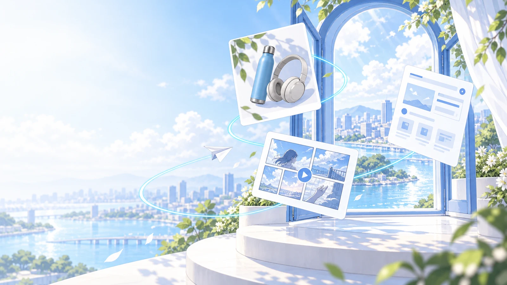

A01
UI構想図
改訂サービス全体の構想図
商品カテゴリ・見せ方を変更
1600 × 1000
トップ / 現在の取り組み / 開発画面01
取扱カテゴリをトレーディングカード、ブランドファッション、精密機器へ変更。左側にはMYSTENAのミステリーボックスを置き、エンタメECの構想として整理しました。
商品とUIは構想用です。実在ブランドのロゴ、取扱実績、鑑定評価や保証を示す表示は入れていません。
CORPORATE VISUAL ASSETS / REVISION
出会う楽しさ。ひらく期待感。
レビューをもとに、6組の構想・図版を整えました。

REVISED ASSETS
商品カテゴリ・見せ方を変更
トップ / 現在の取り組み / 開発画面01
取扱カテゴリをトレーディングカード、ブランドファッション、精密機器へ変更。左側にはMYSTENAのミステリーボックスを置き、エンタメECの構想として整理しました。
商品とUIは構想用です。実在ブランドのロゴ、取扱実績、鑑定評価や保証を示す表示は入れていません。
ミステリーボックス開封の流れへ変更
トップ / 現在の取り組み / 開発画面02
「商品情報・提供条件を確認 → 選んだボックスを開封 → 開封内容を見る」の3段階へ変更。開封結果の一例として、トレーディングカードを見せます。
強い発光、当選演出、価格・利益の強調を使わず、商品の説明と落ち着いた開封を中心にしました。実際の仕様を確約する図ではありません。
利用者を具体化・記号を削除
トップ / 現在の取り組み、および事業紹介
抽象的な人型の記号を、保護ケース入りカードを手にして画面を見る人物へ変更。中央のMYSTENAは文字だけにしています。
正式ロゴが届いたら差し替える前提の文字表記です。対象と価値の関係を説明する構想図として制作しています。
ボックスとコレクティブ商品を追加
トップ / 将来のサービス紹介動画の開始前
ミステリーボックスを手前に、トレーディングカード・ファッション・精密機器のラインナップを奥に配置。商品情報から開封体験までを伝える表紙です。
動画本編は未制作です。カードや商品、ボックスは表紙の方向を確認するための構想イメージです。
星形を廃止・カードの構図へ変更
ニュース一覧・記事詳細 / 記事を掲載するとき
アスタリスクを廃止し、情報のカードが重なる新しいデザインに。白・青・シアンと大きなNEWSの文字で、お知らせとしての読みやすさを保っています。
架空の記事や日付は追加していません。実際のニュースを掲載する際に使う共通表紙です。
文字だけに変更
ヘッダー・フッター・動画・外部資料
星形の記号を外し、MYSTENAの文字だけにしました。明色背景用・濃色背景用とも背景透過のPNGとSVGです。
正式ロゴのデータを受け取るまでの仮素材です。サイトに表示中のロゴ自体は変更していません。
SELECTED ASSETS
A03・A04・A08は原画像をそのまま保管しています。
画像は前回から変更なし
会社情報 / 会社写真の枠に対する代替案
企画、画面づくり、商品表現を同じテーブルで考える3人。採用済みの2D事業画像と空気感を揃えています。
架空の人物・仕事場を描いたイラストです。実際の社員・オフィスを紹介する写真としては使いません。
画像は前回から変更なし
私たちについて / 姿勢・考え方の説明の後
ノート、開発画面、カメラ、発信画面をひとつの机に。企画・開発・表現・販売促進をつなぐ姿勢を伝えます。
仕事の考え方を表す生成イラストです。机上の画面・資料は制作実績ではありません。
原案を保存・記号なし版を追加
URLを共有したときのプレビュー
前回の日本語版は一旦採用として保存しています。アスタリスク廃止の方針に合わせ、文字とコピーを保って装飾をカードへ変えた比較版を添えました。
初期表示は一旦採用したv1日本語版です。「記号なし案」への変更は未採用で、今回の比較対象です。
画像は前回から変更なし
トップ / ヒーロー静止画・将来のブランド動画の方向案
青い窓の向こうへ、商品・UI・映像がつながるイメージ。左側には見出しを重ねられる余白を残しています。
今回新しく描いたブランド静止画です。既存の別工程Previsや完成動画のフレームではありません。
画像の採用と、サイトへの反映は別に扱います。
選択とメモは、このブラウザ内に保存されます。
{kind=link}
{kind=link}
{kind=link}
{kind=link}
{kind=link}
{kind=link}
{kind=link}
{kind=link}
{kind=link}
{kind=link}
{kind=link}
{kind=link}
{kind=link}
{kind=link}
{kind=link}
{kind=link}
{kind=link}
{kind=link}
{kind=link}
{kind=link}
{kind=link}
{kind=link}